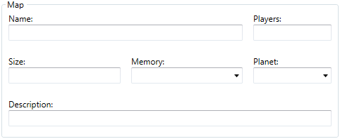

The map section contains six fields: name, players, size, memory, planet, and description. Five of these fields will only ever be used when selecting the map in skirmish or multiplayer.
The map's name. This will be displayed when selecting the map in skirmish or multiplayer. It may also be used by campaigns, but the Core Contingency missions leave the field blank and they have no issues.
The different number of players the map can support. For example, for a four player map you would put "2, 3, 4". This will only be displayed when selecting the map in skirmish or multiplayer.
The map's size in 512x512 pixels. Like the players field, this is only displayed when selecting the map in skirmish or multiplayer.
The recommended system RAM to play the map. Unless you are still using a PC from the late 90s/early 2000s, this field can be ignored. Like with players and size, it is only ever used when selecting the map in skirmish or multiplayer.
What planet type the map is. This is only used by campaigns to determine which rotating planet sprite to display.
The map's short description. As with before, used when selecting the map. Can be up to 128 characters; while there are a few unofficial patches that increase it slightly, OTA Edit limits you to the vanilla length.